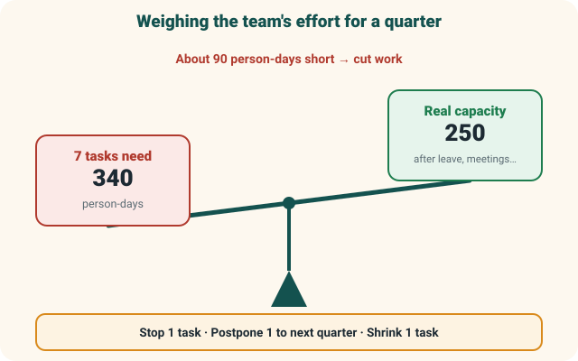

K5 · Planning and keeping work commitments › Level 5 Leading
Review the course: allocate people by your team's priorities
This lesson completes Sheet 8: Quarterly allocation table and not-doing list. Print template. It reuses Sheet 2 (team goal) and the one-page project from the N4 course.
1. Objectives
- Build a quarterly allocation table: compare the effort each task needs with the team's real capacity.
- Write a not-doing list: tasks to stop or postpone, and tell your manager with reasons.
2. Retrieval warm-up
These questions mix the whole course. Answer without looking, then open the answers.
- What are the three columns of the role-shift sheet?
- Why does the team goal have a "Not doing" part?
- What are the four levels of autonomy when delegating?
- What are the four question steps of a coaching one-to-one?
- Why open a difficult conversation with facts, not judgements?
- What is an invisible task? How do you share it fairly?
- What are the five lines of the team AI rules?
Answers
- Let go, keep, start.
- So the team knows where to focus and what to drop when overloaded.
- Follow instructions; propose and wait for approval; act and report back; decide fully alone.
- Goal, reality, options, next step.
- Facts can be checked. Judgements make the listener defensive.
- Shared work nobody is formally given, such as taking minutes. Rotate it on a schedule.
- Tools, data, checking, disclosure, responsibility.
Review: N5 course map.
3. Explanation
Every team has more work than capacity. If the manager accepts everything, the team does everything halfway. Allocating resources means choosing where to put people and time.
A quarterly allocation table has 5 steps.
- List the work: everything running and coming up, including routine work.
- Link to goals: which result on Sheet 2 each task serves. A task linked to no result is a candidate to stop.
- Estimate effort: how many person-days each task needs.
- Work out real capacity: people times working days, minus leave, meetings, training and unplanned work. Do not assume people spend 100% of their time on main work.
- Compare and choose: if the work needs more than the real capacity, cut work. Do not make the team work overtime indefinitely.

A not-doing list has three types.
Not-doing list
- StopWork not linked to any result.
- PostponeUseful but not urgent; note the quarter it will happen.
- ShrinkDo the most important part, drop the rest.
Tell your manager before you stop anything. Send the allocation table and the not-doing list. Say clearly: to add work, which task must go, or how many more people are needed. Let your manager choose. Do not quietly drop work.
Allocate people by ability and development goals. Hard, important work should have a lead and a second person learning alongside. That way the team does not depend on one person.
4. Workplace example
Hypothetical scenario. Henry heads a quality assurance team of 5 at a food factory. Q1 has 7 tasks needing about 340 person-days.
He works out real capacity. 5 people work about 62 days each in the quarter. After leave, meetings, training and unplanned work, about 250 person-days are left. That is about 90 short.
He checks against the team's Sheet 2. Stop: the weekly paper report, because there is now an online dashboard. Postpone: re-auditing the packaging supplier until Q2. Shrink: updating procedures, only the 5 with the most errors.
He sends the table to the factory manager. He states clearly: if the supplier audit must happen in Q1, it needs outside help or another task must move. The manager agrees to postpone.
Preparing for the client audit is led by Lucy, with Theo learning alongside.
Why this works: the real capacity figure subtracts time not spent on main work. The stop and postpone choices are linked to goals. The manager chooses before anything is dropped.
5. Practice
Hypothetical scenario. You lead a team of 4 at a language centre, handling enrolment and student care. Next quarter has: summer enrolment, a student survey, a website rebuild, a parents' seminar, monthly reports. The team estimates 260 person-days of work and about 190 of real capacity.
Write the not-doing list. Write two sentences to your manager.
Hint 1
Which work links directly to this quarter's enrolment goal? Which could be made smaller?
Hint 2
The message to your manager should include the shortfall, your proposal, and a choice for them to make.
Model answer
- Keep: summer enrolment, monthly reports.
- Shrink: the parents' seminar, one session instead of three; the student survey, 5 online questions.
- Postpone: the website rebuild to next quarter; this quarter, fix only the enrolment page.
- To your manager: "Next quarter the team needs about 260 person-days but has about 190. I propose postponing the website rebuild and shrinking the seminar; if we must keep both, we need one more part-time helper."
(The figures are hypothetical.)
6. Self-check
Choose an answer. Every option has an explanation.
Question 1. A team of 4 has 60 working days each this quarter. How should you work out the team's real capacity?
-
Not quite. This assumes everyone spends 100% of their time on main work. In reality there is leave, meetings, training and unplanned work.
-
Correct. Correct. Real capacity is the time left for main work. Overestimating it keeps the team late.
-
Not quite. A plan built on long-term overtime burns the team out.
Question 2. A running task is not linked to any result in the team goal. What do you do?
-
Correct. Correct. Work with no link to a goal is a candidate to stop. Telling first lets your manager know and object.
-
Not quite. Stopping silently can surprise people who rely on it, and damages trust.
-
Not quite. Having done it for a long time is no reason to continue. That time could go to more important work.
Question 3. (Review Lesson 3) You ask a new employee to choose a supplier for a large contract. Which level of autonomy fits?
-
Not quite. The task is costly and the person is new. A mistake would be hard to fix.
-
Correct. Correct. The newcomer still researches and compares, while the costly decision is approved.
-
Not quite. By the time they report, the contract is signed. This level suits familiar, low-risk work.
Question 4. (Review Lessons 4 and 5) In a one-to-one, an employee says a colleague sent them threatening messages. What should you do?
-
Not quite. Threats are in the no-mediation zone and need a proper process. This is not a time to coach.
-
Correct. Correct. Safety matters call for direct action through the proper process, by someone with authority.
-
Not quite. Mediation is not for threats or harassment. The person affected could face more danger.
Question 5. (Review Lesson 7) The team is starting to use AI. Its biggest concern is job cuts. What should you do?
-
Not quite. Concerns that are not heard turn into quiet resistance.
-
Correct. Correct. Open, honest answers build trust. Promise only what you know for sure.
-
Not quite. Promising what you are not sure of destroys trust if things turn out differently.
7. Reflection
- Of the 8 sheets in your manager's handbook, which have you used with a real team? Which not yet?
- Which work is your team doing that is not linked to any result?
8. Real-world application
In the next 7 days, complete Sheet 8 for next quarter and send it to your manager. Review the course after 7 days and after 30 days with each lesson's Self-check. After 3 months, send the three feedback questions from Lesson 1 again and compare.
9. Metadata
| skill | K5 · Planning and keeping work commitments |
|---|---|
| level | Level 5 · Leading |
| group | N5 |
| framework_map | CSfW: 3a Plan and organise; 3b Make decisions; SkillsFuture CCS: Self Management; Decision Making; NACE: Leadership; Professionalism; WEF: Leadership and social influence (reference only) |
| original | Vietnamese version |
| updated | 2026-11-14 |
Finish the lesson
Mark it as done and the site suggests reviews after 1, 3 and 7 days. The data stays on your device only.
Suggested reviews: